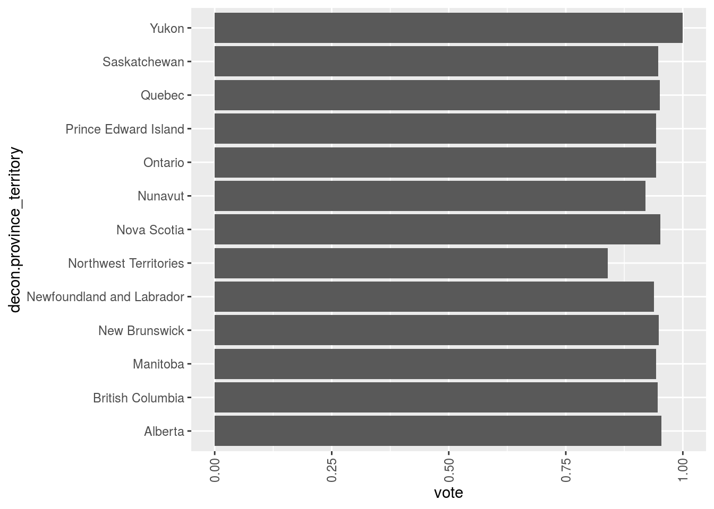

#Abstract My abstract
Introduction
We use Wickham et al. (2019).
Three paragraph statement.
First paragraph: General. Motivational. Majors specific finding.
Second paragraph: More about what you did and found.
Third paragraph: Outline of the paper. Future work. Weaknesses.
#Data The CES dataset is
get_decon()
## TO CITE THIS SURVEY FILE: Stephenson, Laura B; Harell, Allison; Rubenson, Daniel; Loewen, Peter John, 2020, '2019 Canadian Election Study - Online Survey',
## https://doi.org/10.7910/DVN/DUS88V, Harvard Dataverse, V1
## LINK: https://dataverse.harvard.edu/dataset.xhtml?persistentId=doi:10.7910/DVN/DUS88V
mydata=data.frame(decon$province_territory,ces2019_web$cps19_v_likely)
#unique(mydata$ces2019_web.cps19_v_likely)
mydata$vote=ifelse(mydata$ces2019_web.cps19_v_likely==5 | mydata$ces2019_web.cps19_v_likely==6 | is.na(mydata$ces2019_web.cps19_v_likely), NA, ifelse(mydata$ces2019_web.cps19_v_likely==3 | mydata$ces2019_web.cps19_v_likely==4, 0, 1))#Data Discussion The variables we focus on are….“province” “likely scale” response to the upcoming election both variables are categorical
Summary statistics for these variables…
Descriptive statiscis –> how many ppl, “table”
You must include graphs.
Graph
#install.packages("ggplot2")
library(ggplot2)
ggplot(mydata, aes(x=decon.province_territory, y=vote)) + stat_summary(fun.y="mean", geom="bar") + theme(axis.text.x = element_text(angle = 90, vjust = 0.5, hjust=1)) + coord_flip()
## Warning: `fun.y` is deprecated. Use `fun` instead.
## Warning: Removed 2037 rows containing non-finite values (stat_summary).
#Weaknesses
#Nexsteps
References
Stephenson, Laura B; Harell, Allison; Rubenson, Daniel; Loewen, Peter John, 2020, ‘2019 Canadian Election Study - Online Survey’, https://doi.org/10.7910/DVN/DUS88V, Harvard Dataverse, V1
Stephenson, Laura, Allison Harrel, Daniel Rubenson and Peter Loewen. Forthcoming. ‘Measuring Preferences and Behaviour in the 2019 Canadian Election Study,’ Canadian Journal of Political Science.
-ggplot2: Elegant Graphics for Data Analysis Wickham, H., 2016. Springer-Verlag New York.
Wickham, Hadley, Mara Averick, Jennifer Bryan, Winston Chang, Lucy D’Agostino McGowan, Romain François, Garrett Grolemund, et al. 2019. “Welcome to the tidyverse.” Journal of Open Source Software 4 (43): 1686. https://doi.org/10.21105/joss.01686.